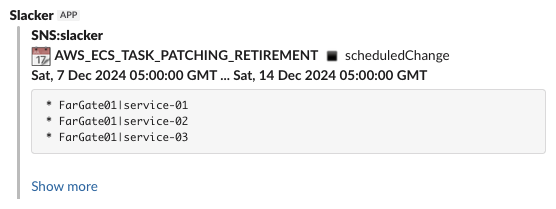
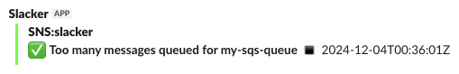

Rule Library¶
This section provides some generic, reusable rules that may prove useful. Adjust them to suit your needs.
In the examples, we have properly formatted any JSON in the source. In the absence of the slacker rule, this would appear in Slack as unreadable symbol soup. The chunky kind. With carrots.
Note
Some of the rules in the library may have overlapping scope. Bear in mind that the order of rules is significant, with the first matching rule being the only one that is applied. More specific rules should precede less specific ones.
AWS Events¶
AWS Health Event
{
"version": "0",
"id": "f647f386-2347-6d6a-d4e9-d8d9ec36d810",
"detail-type": "AWS Health Event",
"source": "aws.health",
"account": "123456789012",
"time": "2024-11-30T05:35:14Z",
"region": "ap-southeast-2",
"resources": [
"FarGate01|service-01",
"FarGate01|service-02",
"FarGate01|service-03"
],
"detail": {
"eventArn": "arn:aws:health:ap-southeast-2::event/ECS/AWS_ECS_TASK_PATCHING_RETIREMENT/AWS_ECS_TASK_PATCHING_RETIREMENT-SYD-DockerLinux-1-4-0-279-123456789012-MANAGED",
"service": "ECS",
"eventTypeCode": "AWS_ECS_TASK_PATCHING_RETIREMENT",
"eventTypeCategory": "scheduledChange",
"eventScopeCode": "ACCOUNT_SPECIFIC",
"communicationId": "334c2ec2523e1d02051ecc68e718394c9b95da96-1",
"startTime": "Sat, 7 Dec 2024 05:00:00 GMT",
"endTime": "Sat, 14 Dec 2024 05:00:00 GMT",
"lastUpdatedTime": "Sat, 30 Nov 2024 05:34:33 GMT",
"statusCode": "upcoming",
"eventRegion": "ap-southeast-2",
"eventDescription": [
{
"language": "en_US",
"latestDescription": "You are receiving this notification because AWS Fargate has deployed a new platform version revision (1) and will retire any tasks running on previous platform version revision(s) starting at Sat, 7 Dec 2024 05:00 GMT as part of routine task maintenance (2). Please find the list of affected tasks in the \\\"Affected Resources\\\" tab . There is no action required on your part unless you want to replace these tasks before task maintenance start time. When using the default value of 100% for minimum healthy percent configuration of an Amazon Elastic Container Service (Amazon ECS) service (3), a replacement task will be launched on the most recent platform version revision before the affected task is retired. Any tasks launched after Sat, 30 Nov 2024 05:00 GMT were launched on the new platform version revision.\\n\\nAWS Fargate is a serverless, pay-as-you-go compute engine that lets you focus on building applications without managing servers. As described in the Fargate documentation (2) and (4), Fargate regularly deploys platform version revisions to make new features available and for routine maintenance. The Fargate update includes updates to the underlying Operating System (Linux or Windows as applicable), and to runtime components. Fargate will gradually replace the tasks in your service using your configured deployment settings, ensuring all tasks run on the new Fargate platform version revision.\\n\\nWe do not expect this update to impact your ECS services. However, if you want to control when your tasks are replaced, you can initiate an ECS service update before Sat, 7 Dec 2024 05:00 GMT by following the instructions below. \\n\\nIf you are using the rolling deployment type for your service, you can run the update-service command from the AWS command-line interface specifying force-new-deployment:\\n\\n$ aws ecs update-service --service service_name \\\n--cluster cluster_name --force-new-deployment\\n\\nIf you are using the Blue/Green deployment type, please refer to the documentation for create-deployment (5) and create a new deployment using the same task definition version.\\n\\nPlease contact AWS Support (6) if you have any questions or concerns.\\n\\n(1) https://docs.aws.amazon.com/AmazonECS/latest/developerguide/platform-fargate.html\\n(2) https://docs.aws.amazon.com/AmazonECS/latest/userguide/task-maintenance.html\\n(3) https://docs.aws.amazon.com/AmazonECS/latest/developerguide/service_definition_parameters.html#sd-deploymentconfiguration \\n(4) https://aws.amazon.com/blogs/containers/improving-operational-visibility-with-aws-fargate-task-retirement-notifications/\\n(5) https://docs.aws.amazon.com/cli/latest/reference/deploy/create-deployment.html\\n(6) https://aws.amazon.com/support\\n\\n"
}
],
"affectedEntities": [
{
"entityValue": "FarGate01|service-01",
"status": "IMPAIRED",
"lastUpdatedTime": "Sat, 30 Nov 2024 05:34:33 GMT"
},
{
"entityValue": "FarGate01|service-02",
"status": "IMPAIRED",
"lastUpdatedTime": "Sat, 30 Nov 2024 05:34:33 GMT"
},
{
"entityValue": "FarGate01|service-03",
"status": "IMPAIRED",
"lastUpdatedTime": "Sat, 30 Nov 2024 05:34:33 GMT"
}
],
"affectedAccount": "123456789012",
"page": "1",
"totalPages": "1"
}
}
rules:
- '#': AWS Health Event
if: "{{ data['detail-type'] == 'AWS Health Event' }}"
template: >-
{% set icons = {
'scheduledChange': ':calendar:',
'issue': ':zap:',
'accountNotification': ':information_source:',
'investigation': ':magnifying_glass_right:',
} %}
{%- set sep=':black_small_square:' -%}
{{ icons.get(data.detail.eventTypeCategory, ':large_purple_circle:') }}
*{{ data.detail.eventTypeCode }}*
{{ sep }}
{{ data.detail.eventTypeCategory }}
*{{ data.detail.startTime }} ... {{ data.detail.endTime }}*
{% if data.resources -%}
```
{% for resource in data.resources %}
* {{ resource }}
{% endfor -%}
```
{% endif %}
{{ (data.detail.eventDescription | first).latestDescription | replace('\\n', '\n') }}

CloudWatch Alarms¶
A core use case for slacker is to reformat CloudWatch alarm messages delivered via SNS into something readable.
Some alarms will naturally be sent to a paging service, but it's almost always worth mirroring them in Slack. Also, a lot of alarms reveal something interesting about the environment without being serious enough to page someone.
CloudWatch Generic Alarm On
{
"AlarmName": "my-sqs-queue-depth",
"AlarmDescription": "Too many messages queued for my-sqs-queue",
"AWSAccountId": "123456789012",
"AlarmConfigurationUpdatedTimestamp": "2023-04-19T05:17:32.984+0000",
"NewStateValue": "ALARM",
"NewStateReason": "Threshold Crossed: 30 out of the last 30 datapoints were greater than the threshold (20.0). The most recent datapoints which crossed the threshold: [60.0 (06/12/24 05:34:00), 60.0 (06/12/24 05:33:00), 59.0 (06/12/24 05:32:00), 59.0 (06/12/24 05:31:00), 59.0 (06/12/24 05:30:00)] (minimum 30 datapoints for OK -> ALARM transition).",
"StateChangeTime": "2024-12-06T05:36:35.649+0000",
"Region": "Asia Pacific (Sydney)",
"AlarmArn": "arn:aws:cloudwatch:ap-southeast-2:123456789012:alarm:my-sqs-queue-queue-depth",
"OldStateValue": "OK",
"OKActions": [
"arn:aws:sns:ap-southeast-2:123456789012:slacker-demo"
],
"AlarmActions": [
"arn:aws:sns:ap-southeast-2:123456789012:slacker-demo"
],
"InsufficientDataActions": [],
"Trigger": {
"MetricName": "ApproximateNumberOfMessagesVisible",
"Namespace": "AWS/SQS",
"StatisticType": "Statistic",
"Statistic": "MAXIMUM",
"Unit": null,
"Dimensions": [
{
"value": "my-sqs-queue",
"name": "QueueName"
}
],
"Period": 60,
"EvaluationPeriods": 30,
"DatapointsToAlarm": 30,
"ComparisonOperator": "GreaterThanThreshold",
"Threshold": 20.0,
"TreatMissingData": "ignore",
"EvaluateLowSampleCountPercentile": ""
}
}
rules:
- '#': CloudWatch Alarm ON
if: "{{ data.NewStateValue == 'ALARM' }}"
colour: '#ff0000'
preamble: <!channel>
template: >
{%- set sep=':black_small_square:' -%}
{%- set desc=(data.AlarmDescription or data.AlarmName or '?').splitlines() -%}
:red_circle:
*{{ desc[0].strip() }}*
{{ sep }}
{{ data.StateChangeTime.split('.')[0] }}Z
{%- if desc | length > 1 %}
{{ data.AlarmDescription }}{%endif %}
_{{ data.NewStateReason }}_

CloudWatch Generic Alarm Off
{
"AlarmName": "my-sqs-queue-depth",
"AlarmDescription": "Too many messages queued for my-sqs-queue",
"AWSAccountId": "123456789012",
"AlarmConfigurationUpdatedTimestamp": "2024-11-19T23:16:17.097+0000",
"NewStateValue": "OK",
"NewStateReason": "Threshold Crossed: 1 out of the last 50 datapoints [48.0 (04/12/24 00:34:00)] was not greater than the threshold (50.0) (minimum 1 datapoint for ALARM -> OK transition).",
"StateChangeTime": "2024-12-04T00:36:01.796+0000",
"Region": "Asia Pacific (Sydney)",
"AlarmArn": "arn:aws:cloudwatch:ap-southeast-2:123456789012:alarm:my-sqs-queue-queue-depth",
"OldStateValue": "ALARM",
"OKActions": [
"arn:aws:sns:ap-southeast-2:123456789012:slacker-demo"
],
"AlarmActions": [
"arn:aws:sns:ap-southeast-2:123456789012:slacker-demo"
],
"InsufficientDataActions": [],
"Trigger": {
"MetricName": "ApproximateNumberOfMessagesVisible",
"Namespace": "AWS/SQS",
"StatisticType": "Statistic",
"Statistic": "MAXIMUM",
"Unit": null,
"Dimensions": [
{
"value": "my-sqs-queue",
"name": "QueueName"
}
],
"Period": 60,
"EvaluationPeriods": 50,
"DatapointsToAlarm": 50,
"ComparisonOperator": "GreaterThanThreshold",
"Threshold": 50.0,
"TreatMissingData": "ignore",
"EvaluateLowSampleCountPercentile": ""
}
}
rules:
- '#': CloudWatch Alarm OFF
if: "{{ data.NewStateValue == 'OK' }}"
colour: '#00ff00'
template: >
{%- set sep=':black_small_square:' -%}
{%- set desc=(data.AlarmDescription or data.AlarmName or '?').splitlines() -%}
:white_check_mark:
*{{ desc[0].strip() }}*
{{ sep }}
{{ data.StateChangeTime.split('.')[0] }}Z

CloudWatch API Gateway Alarm On
This variant on the generic CloudWatch alarm is specific to API Gateway related alarms. It needs to be placed earlier in the rules than the generic CloudWatch alarm rule.
{
"AlarmName": "my-portal-api-4XX-error",
"AlarmDescription": "Api gateway my-portal-api 4XX error more than 50 for 10 minutes. Observation required. More information: https://jin-gizmo.github.io",
"AWSAccountId": "123456789012",
"AlarmConfigurationUpdatedTimestamp": "2024-04-18T00:31:54.519+0000",
"NewStateValue": "ALARM",
"NewStateReason": "Threshold Crossed: 2 out of the last 2 datapoints [63.0 (11/12/24 06:04:00), 66.0 (11/12/24 05:59:00)] were greater than the threshold (50.0) (minimum 2 datapoints for OK -> ALARM transition).",
"StateChangeTime": "2024-12-11T06:09:47.192+0000",
"Region": "Asia Pacific (Sydney)",
"AlarmArn": "arn:aws:cloudwatch:ap-southeast-2:123456789012:alarm:my-portal-api-4XX-error",
"OldStateValue": "OK",
"OKActions": [],
"AlarmActions": [
"arn:aws:sns:ap-southeast-2:123456789012:slacker-demo"
],
"InsufficientDataActions": [],
"Trigger": {
"MetricName": "4XXError",
"Namespace": "AWS/ApiGateway",
"StatisticType": "Statistic",
"Statistic": "SUM",
"Unit": null,
"Dimensions": [
{
"value": "my-portal-api",
"name": "ApiName"
}
],
"Period": 300,
"EvaluationPeriods": 2,
"DatapointsToAlarm": 2,
"ComparisonOperator": "GreaterThanThreshold",
"Threshold": 50.0,
"TreatMissingData": "notBreaching",
"EvaluateLowSampleCountPercentile": ""
}
}
rules:
- '#': CloudWatch Alarm ON (API Gateway Alarm)
if: "{{ data.NewStateValue == 'ALARM' and data.Trigger.Namespace == 'AWS/ApiGateway' }}"
colour: '#ff0000'
preamble: <!channel>
template: >
{%- set sep=':black_small_square:' -%}
{#- Get the API name from alarm dimensions -#}
{%- set api=(data.Trigger.Dimensions | selectattr('name', 'equalto', 'ApiName') | first) or {'value': '?'} -%}
{#- Get a Python re.Match object for the event counts from the alarm reason -#}
{%- set m=re.search('\[[^]]*\]', data.NewStateReason) -%}
:red_circle:
*{{ data.AlarmName }}*
{{ sep }}
{{ api.value }}
{{ sep }}
{{ data.StateChangeTime.split('.')[0] }}Z
{% if m -%}
{#- Get rid of the timetamps in the clause containing event counts -#}
{%- set counts=re.sub(' *\([^)]*\)','',m.group(0)) -%}
*Count {{ counts }} > {{ data.Trigger.Threshold | int }}*{% endif %}
{%- if data.AlarmDescription %}
_{{ data.AlarmDescription }}_{% endif %}

EC2 Events¶
Auto Scaling Instance Launch
These events occur when an auto scaling group launches new instances. It is sometimes handy to know about this but rarely interesting enough to page someone. What is not handy is 50 lines of JSON bumph spewing into your operations Slack channel when an instance launches.
Slacker is a good fit for these messages.
{
"Origin": "EC2",
"Destination": "AutoScalingGroup",
"Progress": 50,
"AccountId": "123456789012",
"Description": "Launching a new EC2 instance: i-01918b2230392f631",
"RequestId": "59864e62-e212-6604-627d-5ac06f09f7ec",
"EndTime": "2024-12-05T21:27:35.517Z",
"AutoScalingGroupARN": "arn:aws:autoscaling:ap-southeast-2:123456789012:autoScalingGroup:8dc6c859-8cbd-4549-94f1-72678f7a5a0a:autoScalingGroupName/my-asg",
"ActivityId": "59864e62-e212-6604-627d-5ac06f09f7ec",
"StartTime": "2024-12-05T21:27:29.689Z",
"Service": "AWS Auto Scaling",
"Time": "2024-12-05T21:27:35.517Z",
"EC2InstanceId": "i-01918b2230392f631",
"StatusCode": "InProgress",
"StatusMessage": "",
"Details": {
"Subnet ID": "subnet-abcdefab",
"Availability Zone": "ap-southeast-2b",
"InvokingAlarms": [
{
"AlarmArn": "arn:aws:cloudwatch:ap-southeast-2:123456789012:alarm:TargetTracking-my-asg-AlarmHigh-1bd75141-14b2-4f14-ad2b-6d26ea7c94a8",
"Trigger": {
"MetricName": "WorkerBacklog",
"EvaluateLowSampleCountPercentile": "",
"ComparisonOperator": "GreaterThanThreshold",
"TreatMissingData": "",
"Statistic": "AVERAGE",
"StatisticType": "Statistic",
"Period": 60,
"EvaluationPeriods": 3,
"Unit": null,
"Namespace": "MyApp",
"Threshold": 20
},
"AlarmName": "TargetTracking-my-asg-AlarmHigh-1bd75141-14b2-4f14-ad2b-6d26ea7c94a8",
"AlarmDescription": "DO NOT EDIT OR DELETE. For TargetTrackingScaling policy arn:aws:autoscaling:ap-southeast-2:123456789012:scalingPolicy:a2c49e03-5a24-4a34-93a6-4d1aab48ad6d:autoScalingGroupName/my-asg:policyName/my-asg-asgWorkerScalingPolicy-crdTF9",
"AWSAccountId": "123456789012",
"OldStateValue": "ALARM",
"Region": "Asia Pacific (Sydney)",
"NewStateValue": "ALARM",
"AlarmConfigurationUpdatedTimestamp": 1732249141214,
"StateChangeTime": 1733433742189
}
]
},
"AutoScalingGroupName": "my-asg",
"Cause": "At 2024-12-05T21:27:22Z a monitor alarm TargetTracking-my-asg-AlarmHigh-1bd75141-14b2-4f14-ad2b-6d26ea7c94a8 in state ALARM triggered policy my-asg-asgWorkerScalingPolicy-crdTF9lGieul changing the desired capacity from 2 to 3. At 2024-12-05T21:27:28Z an instance was started in response to a difference between desired and actual capacity, increasing the capacity from 2 to 3.",
"Event": "autoscaling:EC2_INSTANCE_LAUNCH"
}
The same rule handles both launch and termination events.
rules:
- '#': Auto scaling launch / termination
if: "{{ data.Service == 'AWS Auto Scaling' }}"
template: >
{% set icons = {
'autoscaling:EC2_INSTANCE_LAUNCH': ':arrow_heading_up:',
'autoscaling:EC2_INSTANCE_TERMINATE': ':arrow_heading_down:',
} %}
{%- set sep = ':black_small_square:' -%}
{{- icons.get(data.Event, data.Event.split(':')[-1]) }}
*{{ data.AutoScalingGroupName }}*
{{ sep }}
{{ data.EC2InstanceId }}
{{ sep }}
{{ data.StartTime.split('.')[0] }}Z
_{{ data.StatusCode }}_

Auto Scaling Instance Termination
{
"Origin": "AutoScalingGroup",
"Destination": "EC2",
"Progress": 60,
"AccountId": "123456789012",
"Description": "Terminating EC2 instance: i-0bc09f781ddd6f516",
"RequestId": "f6c642e2-21ec-4bcb-a28e-892808bfa29e",
"EndTime": "2024-12-05T21:50:47.987Z",
"AutoScalingGroupARN": "arn:aws:autoscaling:ap-southeast-2:123456789012:autoScalingGroup:8dc6c859-8cbd-4549-94f1-72678f7a5a0a:autoScalingGroupName/my-asg",
"ActivityId": "f6c642e2-21ec-4bcb-a28e-892808bfa29e",
"StartTime": "2024-12-05T21:48:52.881Z",
"Service": "AWS Auto Scaling",
"Time": "2024-12-05T21:50:47.988Z",
"EC2InstanceId": "i-0bc09f781ddd6f516",
"StatusCode": "MidTerminatingLifecycleAction",
"StatusMessage": "",
"Details": {
"Subnet ID": "subnet-abcdefab",
"Availability Zone": "ap-southeast-2c",
"InvokingAlarms": [
{
"AlarmArn": "arn:aws:cloudwatch:ap-southeast-2:123456789012:alarm:TargetTracking-my-asg-AlarmLow-7a95c75c-aaf8-482d-9516-90723ad7ea91",
"Trigger": {
"MetricName": "WorkerBacklog",
"EvaluateLowSampleCountPercentile": "",
"ComparisonOperator": "LessThanThreshold",
"TreatMissingData": "",
"Statistic": "AVERAGE",
"StatisticType": "Statistic",
"Period": 60,
"EvaluationPeriods": 15,
"Unit": null,
"Namespace": "MyApp",
"Threshold": 14
},
"AlarmName": "TargetTracking-my-asg-AlarmLow-7a95c75c-aaf8-482d-9516-90723ad7ea91",
"AlarmDescription": "DO NOT EDIT OR DELETE. For TargetTrackingScaling policy arn:aws:autoscaling:ap-southeast-2:123456789012:scalingPolicy:a2c49e03-5a24-4a34-93a6-4d1aab48ad6d:autoScalingGroupName/my-asg:policyName/my-asg-asgWorkerScalingPolicy-crdTF9",
"AWSAccountId": "123456789012",
"OldStateValue": "ALARM",
"Region": "Asia Pacific (Sydney)",
"NewStateValue": "ALARM",
"AlarmConfigurationUpdatedTimestamp": 1732250795584,
"StateChangeTime": 1733435027153
}
]
},
"AutoScalingGroupName": "my-asg",
"Cause": "At 2024-12-05T21:48:47Z a monitor alarm TargetTracking-my-asg-AlarmLow-7a95c75c-aaf8-482d-9516-90723ad7ea91 in state ALARM triggered policy my-asg-asgWorkerScalingPolicy-crdTF9lGieul changing the desired capacity from 2 to 1. At 2024-12-05T21:48:52Z an instance was taken out of service in response to a difference between desired and actual capacity, shrinking the capacity from 2 to 1. At 2024-12-05T21:48:52Z instance i-0bc09f781ddd6f516 was selected for termination.",
"Event": "autoscaling:EC2_INSTANCE_TERMINATE"
}
The same rule is used to handle both auto scaling launches and terminations.

General Purpose Rules¶
JSON Formatting
Lot's of AWS events show up in (densely packed) JSON format. A handy rule of last resort simply formats the JSON nicely before passing it to Slack.
This rule should generally go low in the rules list. It will not touch messages that are not JSON.
{"a": "alpha", "c": "gamma", "b": "beta", "...":["d", "e", "etc"]}
rules:
- '#': Pretty print messages consisting of JSON
template: |
```
{{ data | tojson(4) }}
```

Wildcard Webhook Rules
The wildcard webhook is a special purpose
webhooks table entry with a sourceId of *. Any rules
in the wildcard webhook are implicitly added to the end of the rules list for
all other webhooks. It is a good place for common rules that would otherwise
need to be duplicated in individual webhooks.
The following sample can be modified as needed.
sourceId: '*'
rules:
- '#': AWS Health Event
if: "{{ data['detail-type'] == 'AWS Health Event' }}"
template: >-
{% set icons = {
'scheduledChange': ':calendar:',
'issue': ':zap:',
'accountNotification': ':information_source:',
'investigation': ':magnifying_glass_right:',
} %}
{%- set sep=':black_small_square:' -%}
{{ icons.get(data.detail.eventTypeCategory, ':large_purple_circle:') }}
*{{ data.detail.eventTypeCode }}*
{{ sep }}
{{ data.detail.eventTypeCategory }}
*{{ data.detail.startTime }} ... {{ data.detail.endTime }}*
{% if data.resources -%}
```
{% for resource in data.resources %}
* {{ resource }}
{% endfor -%}
```
{% endif %}
{{ (data.detail.eventDescription | first).latestDescription | replace('\\n', '\n') }}
- '#': CloudWatch Alarm ON
if: "{{ data.NewStateValue == 'ALARM' }}"
colour: '#ff0000'
preamble: <!channel>
template: >
{%- set sep=':black_small_square:' -%}
{%- set desc=(data.AlarmDescription or data.AlarmName or '?').splitlines() -%}
:red_circle:
*{{ desc[0].strip() }}*
{{ sep }}
{{ data.StateChangeTime.split('.')[0] }}Z
{%- if desc | length > 1 %}
{{ data.AlarmDescription }}{%endif %}
_{{ data.NewStateReason }}_
- '#': CloudWatch Alarm OFF
if: "{{ data.NewStateValue == 'OK' }}"
colour: '#00ff00'
template: >
{%- set sep=':black_small_square:' -%}
{%- set desc=(data.AlarmDescription or data.AlarmName or '?').splitlines() -%}
:white_check_mark:
*{{ desc[0].strip() }}*
{{ sep }}
{{ data.StateChangeTime.split('.')[0] }}Z
- '#': Pretty print messages consisting of JSON
template: |
```
{{ data | tojson(4) }}
```